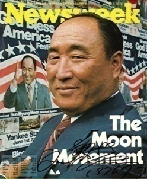
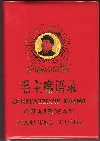
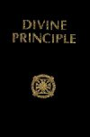
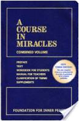

1976
1976 1 jan. Årets motto är "Förverkligandet av Himmelriket genom Guds barn".
Hans tal rubriceras inte längre som Master Speaks (1972-1975) - 3:e 7års-perioden startar.
. International Relief Friendship Foundation grundas.
22 januari 1976
Unification Church center i Paris bombades av en kommunistisk grupp efter flera negativa artiklar i franska liberala media.Flera medlemmar skadades allvarligt (norsk syster), också andra centra över hela Frankrike har attackerats vid denna tid.
Klaus Schick, som bodde i Lyon på den tiden, berättar om händelserna den 22 januari 1976 och därefter.
31 jan. (Månkal. 1 jan.) Unification ceremoni.
. New York City Tribune grundas.
21 maj Sanna föräldrar välsignar hotell New Yorker (köpt 5 maj), och ber för staden New York.
Kuriosa;
Nikola Tesla (berömd upptäckare av elektriska fenomen) dog utfattig i rum 3327, är 1943.
Hotell New Yorker döps till "The World Mission Center"
1 juni Yankee Stadium stormöte talare Sun Myung Moon.

11 juli Son-Jin Nim föds.
1 sep Professor Yong Oon Kim ger ut World Religions del 1,2,3.
Världen: 9 sept. Mao Zedong i kommunist-Kina där.
Maos bok med texter "Maos lilla röda"

inspirerade många unga radikala på 60-70 talet.Var dom förberedda för den radikalaste andliga sanningen Principerna

!
18 sep Washington Monument stormöte - talare Sun Myung Moon samlade 300 000 åskådare.
Samma dag som Guds största mästare Sun Myung Moon firades i Washington, firades ateistiska kommunistordföranden
Mao i Kina.
Slump! - Nej himmelska lagar. Liksom 1953, då Stalin dog i slutet av Koreakriget 1950-53.
4 okt. Dagen för Himlens seger (Day of Victory of Heaven).
Den 4 oktober 1976, håll Sanna föräldrar en fest på Belvedere International Training Center i New York för att
fira segern i Washington Monument väckelsemöte, och deklarerade dagen som Dagen för segern i himlen (Cheon
SeungIl).
"I Enighetskyrkan är andliga världen mycket levande. Enighets-rörelsen är inte bara en horisontell
rörelse; det är en vertikal rörelse kopplad till Gud.
Alla saker i Enighetskyrkan återspeglas i andliga världen medan alla saker i den andliga världen återspeglas
genom oss.
Interaktionen mellan dessa två världar är en del av funktionerna (syftena) av vår rörelse." /SMM
6 december 1976 kom Nils Berglind till Gåteborg som pionjär , då enligt "andliga formlerna" tre center måste etableras inom sju är. Uppsala hade etablerats sommaren 1974, i samband med Nils inträdde. Örebro, som påbörjats av Jan Peter 1974, hade lagts på is. Nils blev ditskickad januari 1975, men sänd åter till Uppsala ett par månader senare. Därmed var det slut på vär "Örebromission" för den gången.
Förföljelsen var som hårdast under 1975 och 1976. Jag sände ut missionärer 1975. Jag gjorde det för att förkorta den tid som behövs för att slutföra försynen.

"A Course of Miracles", nedtecknades av psykologen Dr Schucman, genom en process av diktamen från en inre röst, som identifierat sig som Jesus.
Kursen består av tre böcker: "Texten", "Arbetsbok för studenter" och "Manual för lärare". Nedtecknade från 1965 till 1972,